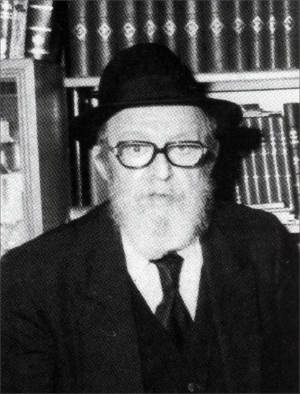

Young in Spirit
For over thirty years R’ Yisroel Leibov served as director of Tzach (Tzeirei Agudas Chabad – Chabad Youth Organization). Nearly all hafatza activities that the Rebbe initiated in Eretz Yisroel went through him. * Twenty years after his passing, Beis Moshiach presents a look into the life of a man whose story is the story of Chabad activity in Eretz Yisroel. * Part 2

R’ Yisroel went to see the Rebbe for the first time in the beginning of the 60’s. Throughout that month of Tishrei, this active askan and seasoned businessman sat and learned in 770 and barely left. He had yechidus for the first time which he told about in an interview with Maariv:
When I was brought in, I saw our Rebbe sitting behind his desk. The Rebbe does not give his hand to his Chassidim. He just asks, “Nu?” as though to say, what do you have to tell me, my Chassid? The Rebbe did not ask me who I am but got right to the point, for he already knew who I was without my saying. I must confess that I was confused and was not able to get hold of myself. The Rebbe wanted to know about the commotion regarding the children from Ramat Hadassah and asked what part Aliyat HaNoar actually had in this. I saw that he was more knowledgeable than me in what was going on by us and I said so.
The Rebbe also asked about our Tzeirei Chabad that goes to all kinds of kibbutzim. The Rebbe said that we need to get to know them more and more. The Rebbe said, “They are still distant from Torah and mitzvos.”
The interviewer noted:
“Still” is the word the Rebbe used. Get it? The Chassid Leibov is certain that if the Rebbe said “still,” he used that word to mean that there is still hope and the time will come when those on the kibbutzim will not be any more distant from the taryag (613) mitzvos than any real Lubavitcher.
PERPETUAL ACTION
The Rebbe considered Tzach a general organization that had to operate in any way possible to spread Judaism. Therefore, he assigned it jobs not directly connected to spreading the wellsprings. Thus, the Rebbe told R’ Yisroel in the early years to do things among every possible group starting with trying to establish set times for Torah learning in shuls throughout the holy land, along with activities to spread Judaism and visits to kibbutzim.
One of the points that was especially emphasized in the Rebbe’s letters to R’ Yisroel about the activities was “pe’ula nimsheches,” to make sure that there was some follow-up that resulted from every activity.
The Rebbe said that libraries on kibbutzim should have basic Jewish books so that the kibbutz members should develop an appreciation for their worth and those who knew how to learn would teach others from these books.
When R’ Yisroel asked the Rebbe whether to arrange a special welcome for tourists who came to Kfar Chabad, the Rebbe said not only that, but they should seek to invite tourists to stay in Kfar Chabad, since by having an influence on them, they in turn would have an influence in the countries they came from upon their return there.
The Rebbe demanded follow-up with actual mitzva performance. When R’ Yisroel asked the Rebbe whether to make an “Erev Chabad” on Chol HaMoed Pesach, a time that was more convenient for a lot of people because they are off from work, the Rebbe replied that all the “Evenings with Chabad” should be held before Purim or Pesach in order to make people aware of the mitzvos of the upcoming holiday. An “Evening with Chabad” should not just be a pleasant evening. It has to produce practical results in Torah and mitzva observance.
ALWAYS FIRST
Whenever someone asked the Rebbe for Chabad to come and visit him or someone came up with a new idea for a program in Eretz Yisroel, he was referred to the modest office of R’ Yisroel Leibov. All the instructions from the secretariat went to him and he carried them out swiftly.
Someone wrote to the Rebbe that he wants to learn Tanya? R’ Yisroel was told to find him someone with whom to learn. Someone from Beer Sheva wrote worriedly to the Rebbe that he did not find a religious school for his two sons? R’ Yisroel was the one who took care of that. An army officer wanted a few pairs of t’fillin? R’ Yisroel was the Rebbe’s shliach to procure them.
R’ Yisroel was the first in all good things that needed taking care of and his alacrity was a byword. As soon as he returned from visiting the Rebbe in Kislev 5734, when the Rebbe told him to get involved in Mivtza Chinuch, he got to work. The Rebbe himself praised his swiftness in a letter, “Many thanks for hastening to speak with your colleagues in matters of chinuch that were spoken of here, and surely you will continue to do this with all the necessary energy and speed.”
When Jews began to leave Russia in the 1960’s, the secretariat asked R’ Yisroel to find out what was going on in this regard. The Rebbe gave the word and R’ Yisroel had basic Jewish books translated into Russian, printed and distributed among the immigrants. After a few years, R’ Yisroel was one of the founders of Shamir, the organization of Russian academicians, which did so much to strengthen Judaism among the academicians who came from the Soviet Union.
R’ Yisroel sent Chassidim to immigrant centers in order to talk to them and strengthen them in Torah and mitzvos and he organized gatherings for men and women in Kfar Chabad, urging them to get involved with Russian Jews.
The same happened when the organization which deals with delinquent youth sent in a request for someone to come and visit them, or when someone suggested to the secretariat that they get involved in the youth hostels. A letter from the secretariat would arrive addressed to him.
The work he was asked to do wasn’t just in spreading Judaism. For example, the Rebbe asked R’ Yisroel in 5733 to get involved with a boy who was finishing elementary school and was wandering around with nothing to do. The Rebbe said they should try and make suitable programs for these children, programs that would set them up with work or learning a profession. The oversight of the program would remain Tzach’s job, but the program itself would be completely separate so that the person who would run it would develop it as necessary.
Despite this, the Rebbe told R’ Yisroel that Tzach should be involved in spreading the wellsprings and not veer from that. When some people suggested that Tzach run a campaign against road accidents, the Rebbe said that was not their jurisdiction. More on this:
At first, R’ Leibov was told by the Rebbe’s secretaries to work on getting the enactment to recite daily T’hillim out to the masses. In the instruction it said that this enactment was not meant exclusively for Lubavitcher Chassidim but for all Jews, and this should be publicized and efforts made so that it would be done in as many shuls as possible.
However, when the Rebbe felt that working on this would be at the expense of spreading the wellsprings, which is the main thing, he said to focus on establishing the existing programming, and for now not to think about new large-scale projects.
The Rebbe gave R’ Yisroel instructions down to the smallest details. When the Tzach vehicle was appropriated during the Yom Kippur War, the Rebbe told R’ Yisroel in yechidus that since Tzach’s work requires one vehicle and even more, they should work on getting one. When the Rebbe heard that due to lack of space, the office of N’shei Chabad was operating out of Tzach’s office, the Rebbe said that should stop immediately.
On the other hand, the Rebbe was not always willing to give the instructions himself. He often told R’ Yisroel that he [R’ Yisroel] had to take responsibility and decide since it was not possible to know from overseas.
WHERE IS THE DIRECTOR?
The 60’s and 70’s were years in which Tzach went from being a little organization with two branches to an organization whose outreach activities were spread throughout the country. The expanded work demanded more manpower and more resources, especially when the Rebbe added new projects and instructions throughout the years. Generally, the instructions were dealt with by a team of four men: R’ Efraim Wolf, R’ Shlomo Maidanchek, R’ Yisroel and R’ Shmuel Chefer.
In 5730, R’ Yisroel wrote to the Rebbe that the work was beyond his abilities. The Rebbe told him to get additional people involved and give them autonomy in their work while he supervised.
Despite the expansion of the organization, the director remained a simple Chassid with no trappings of honor, no secretaries and assistants. When Maariv came to interview him at the historic branch of Tzach on Rechov HaRav Kook in Tel Aviv, the reporter described his entrance into the office:
“We knocked lightly with one finger on the door to the reception area that fronted on the yard. Behind the desk, someone raised his hand and gazed at us with a warm look of greeting. ‘Shalom,’ we said. He said, ‘Shalom u’v’racha.’ We asked, ‘Can we speak with the director of the Tzach organization in Israel?’
“The man behind the desk fixed his gaze upon us, ran his hand through his curly beard and asked calmly, ‘What do you need of him?’ We felt impatient. There was bureaucracy here too? We said, ‘Journalism.’ He looked at us for a while and then said, ‘You can speak with me too.’ We insisted, ‘They said to speak to the director.’ He straightened the kippa on his head and a smile peeked out from his beard. ‘I already said, you can speak to me. The man you are seeking is me.’”
MITZVA CAMPAIGNS
On Motzaei Shabbos, Parshas BaMidbar 5727, R’ Yisroel received a telegram from New York with a summary of the sicha from Shabbos. In the famous sicha which the Rebbe said that Shabbos, Mivtza T’fillin was announced as a spiritual protection for the army.
R’ Yisroel immediately got to work coordinating the campaign. Many groups of Chassidim were sent to every possible base to put t’fillin on with soldiers. In many parts of Eretz Yisroel, pamphlets were distributed aimed at inspiring people to perform this mitzva.
The war ended miraculously but the hard work, from R’ Yisroel’s perspective, had just begun. The Rebbe demanded “onward and upward.” Mivtza T’fillin continued, with Chabad Chassidim having to deal with the many Jews who wanted to commit to putting t’fillin on daily but did not have t’fillin. Tzach subsidized t’fillin for these men with the Rebbe telling R’ Chadakov to give Tzach more and more money so there would not be a single Jew who did not receive t’fillin. Nor did the Rebbe forget the most downtrodden Jews; R’ Yisroel was told to take care of Jews sitting in jail too.
At the farbrengen of the third day of Slichos 5729, at the end of the sicha about the importance of t’fillin, the Rebbe announced: “We have here those who head the T’fillin Campaign in Eretz Yisroel. They should say l’chaim and pour and distribute [mashke] amongst the assembled.” The Rebbe gave mashke to R’ Yisroel, the one leading the t’fillin campaign in Eretz Yisroel.
In the 70’s, Tzach really began to take off after the Rebbe started the mitzva campaigns. All at once, the activities of Tzach and of Chabad Chassidim in Eretz Yisroel changed from work that focused on “Evenings with Chabad” and shiurim along with holiday programs, to annual activities that revolved around the ten campaigns.
The huge amount of work was overwhelming and R’ Yisroel wrote to the Rebbe that he could not manage alone. The Rebbe encouraged him to take in young people and give them autonomy. Some of the people who joined Tzach at that time are still working there today.
Despite the expansion of activities and developing hundreds of new branches throughout the country, R’ Yisroel continued to work nearly alone in fundraising. He gave the materials, the mishloach manos, the matza, etc. for free to Chabad activists throughout the country without their having to pay headquarters.
THE REBBE GIVES FINANCIAL HELP
The economic situation in Eretz Yisroel never allowed Tzach to become self-sustaining. The Rebbe helped Tzach numerous times including financially, whether to buy doughnuts for Chanuka or for farbrengens, to arrange exhibits or a variety of other activities.
When the Rebbe announced Mivtza Mezuza, the financial end of things was the main problem of the campaign. The Rebbe wanted a mezuza in every Jewish home, in the immigrant housing, government offices, etc. The Rebbe instructed them to give mezuzos on all sorts of occasions to all kinds of people, war wounded soldiers for example, etc.
To give mezuzos as a gift or on long-term credit required a lot of money. At a certain point, there was even fear that the intensity of the campaign would fizzle because of financing. R’ Chadakov told R’ Efraim Wolf on 6 Nissan 5734: “Tell R’ Yisroel Leibov that when it comes to Mivtza Mezuza not to look at [financial] numbers… and do it even before Pesach. 50,000 liros are being sent for this purpose.”
The success of the campaign in its early days in Eretz Yisroel was so great to the point that at a meeting held in his home in Kfar Chabad, when a number of people suggested putting ads in the papers, R’ Yisroel said no. The costs of the mezuzos themselves had used up all the money. One of the fascinating ideas that R’ Yisroel came up with was to ask the Misrad HaShikun (Housing Ministry) to put up kosher mezuzos in every building that would be built in the country.
Despite the enthusiasm of the Chabad Chassidim in Eretz Yisroel to get to every home and put up kosher mezuzos, the financial problem always loomed. R’ Leibov wrote a letter to the Rebbe in which he complained about the lack of money. As a result, he received a check from R’ Chadakov for $10,000 along with the following note:
“On the one hand, you must continue the five mivtzaim in general and Mivtza Mezuza in particular, with all the strength and haste, with the greatest commotion, and added proof of this is the promise of the Rebbe shlita that if there is no other way to cover the deficit, to provide support from here in the greatest possible manner, as you well know.”
R’ Yisroel’s work was very precious to the Rebbe as we can see from the following account. A lot of money went through R’ Efraim Wolf. When R’ Efraim once told the Rebbe that because of debts he had given R’ Yisroel postdated checks for the end of the following month, and that if it became possible he would allow him to deposit them earlier, the answer from the secretariat was: give R’ Yisroel all the money, despite the debts.
One year, R’ Yisroel wrote the Rebbe himself that he planned on reducing the scope of Mivtza Chanuka because of the costs. In a phone call with R’ Efraim, R’ Chadakov said, “The Rebbe’s approach is to ‘ascend in holiness,’ and there is no talk about cutting down. Therefore, do not do less than last year and if you are lacking funding, let us know.”
On 9 Adar I 5738, R’ Yisroel wrote to the Rebbe about the high costs of Mivtza Purim, a million liras, and said:
“It seems to me that I am devoted to this matter with all my soul and that I operate properly … and yet, every year there is participation from the secretariat in these campaigns: Chanuka, Purim with the soldiers and Mivtza Matza. And whenever the time comes and I have no means, I start writing to R’ Chadakov and it is very hard for me but I have no other recourse and then, in the end, help is provided. R’ Chadakov himself said that not one Jew should remain without shmura matza because of financial reasons.
“The Rebbe’s money is precious to me as well and I do not, G-d forbid, seek to extract money from the secretaries to make it easier for me. I make every possible effort and the money that comes in goes out solely for matters of Tzach …
“So my request is: if the Rebbe will see fit to send us money, it would be highly desirable that some amount be sent before Purim, and please, please, not to be upset with me because (it seems to me that) I write this for the good of the matter.” The Rebbe circled the last two lines and noted succinctly, “fulfill his request.”
The financial aid was not limited to mitzva matters. In the 60’s, Tzach held exhibitions several times that were meant to present Chabad to the public. The Rebbe instructed to give a third of the budget so that it be done in the nicest and most respectable manner.
THE END DOES NOT JUSTIFY THE MEANS
On the one hand, the Rebbe wanted every opportunity used to spread the wellsprings; on the other hand, the Rebbe told R’ Leibov to beware of giving a hechsher (stamp of approval) to unsuitable places. For this reason, the Rebbe negated shiurim in irreligious schools or formal activities in movie theaters, which could cause those kids who would not otherwise go to a place like that, to go because of these activities.
Not only unsuitable places were negated but also unsuitable methods. When it was suggested that a plane scatter leaflets over Miron on Lag B’Omer, the Rebbe negated that outright and said, “Not even from a car.”
We can see how particular the Rebbe was about utilizing suitable methods and his tremendous love for every Jew from the following story:
Between the years 5724-5728, Tzach activists (led by the director of activities, R’ Itzke Gansburg) dropped leaflets from a plane before Purim. The Rebbe encouraged this until Shevat 5729 when the Rebbe wrote, “The plane is not worthwhile this year.”
When R’ Itzke had yechidus, the Rebbe explained to him that he knows that the Jewish people are tense because of the war that had ended not that long before and why make people nervous?
In Elul 5726 there was an Evening with Chabad held at a festival that took place in Caesarea. Some Chassidim who were inebriated, behaved in a manner that raised some eyebrows and a few newspapers wrote unflattering articles.
As a result, R’ Yisroel avoided reporting to the Rebbe, but when he had yechidus toward the end of Tishrei, the Rebbe said, “About the festival, you must understand that what is appropriate for Simchas Torah in Kfar Chabad is not appropriate for a festival. I refer to dancing and standing on their head which led to criticism in the newspapers.”
R’ Leibov said, “I opposed this from the outset and they promised it wouldn’t happen. When I saw the results I was very upset but I could do nothing.”
“There is no need to get excited or be upset,” said the Rebbe reassuringly. “But there is no need for this.”
“I received a serious censure,” wrote R’ Yisroel in a letter to R’ Tuvia Blau.
A PRIZE PERTAINING TO THE ALTER REBBE
In the summer of 5733/1973, the Rebbe called for getting involved in the chinuch of Jewish boys and girls and referred to the verse, “out of the mouths of babes and sucklings you have ordained strength.” Many camps were opened all over Eretz Yisroel during summer vacation.
In the ads inviting children to come and join the activities, they mentioned prizes they would get including a soccer ball. The Rebbe reacted as follows, “What compelled you to include that in particular? Were all other items in the Holy Land used up? Did not a single person who dealt with this consider that it is possible that a prize pertaining to Chabad and the Alter Rebbe can be a bike and candy etc. but not a soccer ball?”
In a phone conversation that was relayed to R’ Efraim Wolf, the Rebbe asked that he tell R’ Leibov that the Rebbe did not recognize the soccer ball prize and the ads that were printed should be destroyed, in a quiet manner; the children should not be given this prize and in the future they should know the Rebbe’s view about this.
Another instruction which the Rebbe gave was not to get into financial obligations that they could not cover.
The summer had already ended and Tzach was planning on ending the summer clubs when there was a sudden farbrengen on Shabbos Parshas Eikev 5733. The Rebbe said to continue the youth clubs for another forty days, until Rosh HaShana. In a telegram which arrived on Motzaei Shabbos, R’ Chadakov promised 50% of the costs of the club activities in Eretz Yisroel. That Yom Kippur war broke out and the Rebbe quoted the phrase, “he prophesied but did not know what he prophesied” about that summer.
At this time, many Jews from Uzbekistan went to Eretz Yisroel in the big wave of immigration of the 1970’s. Chabad Chassidim have a special fondness for these Jews, since during the great migration when fleeing the Nazi war machine they went to Samarkand and Tashkent where they received a warm welcome from the local Jews. When they arrived in Eretz Yisroel, the secular culture began having an influence on them and some of them put their children in public school.
At an emergency meeting of Anash activists, they decided to take action. R’ Yisroel took responsibility for finding a couple to go among the new immigrants and register their children in proper schools. In fact, many of these immigrant children attended Chabad schools - Achei T’mimim, Yeshivas HaBucharim that was founded just for them, and schools in Nachalat Har Chabad.
STAYING YOUNG AT 70
R’ Leibov did not merely sit in the Tzach office or meet with heads of government; he himself went out to the field like any simple soldier, in order to disseminate Chassidus.
Even before he reverted to being a “Chabad youth,” when he worked for Pe’ilim, R’ Yisroel would speak before hundreds of residents of moshavim and urge them to send their children to proper schools. Aside from fiery speeches to guests who visited Kfar Chabad, he often went to farbreng at nearby moshavim on special days. During the battle for Mihu Yehudi, he did not suffice with many meetings with important communal figures but also spoke on the topic and inspired the masses.
A small and routine report in a Chabad publication says, “On Shabbos Chanuka, R’ Yisroel Leibov and R’ Eliyahu Rivkin visited the shul in Shikun HaPoel HaMizrachi near Kfar Chabad. R’ Leibov urged the participants to establish set times to study Tanya and his suggestion was accepted. Since then, every Shabbos morning, R’ Leibov teaches a chapter of Tanya there.”
Over the course of a few years, R’ Leibov gave a weekly shiur in Netanya where there wasn’t ongoing Chabad activity. When the Rebbe announced the campaign of 70 mosdos, he started a library in Netanya which was supported by R’ Tzvi Haramati and Mr. Nachum Weisfiche. When the Rebbe was informed, he gave R’ Leibov a discount of $140 and another 50% off on all Kehot s’farim that he placed in the library.
In 5738, he arranged a national Mivtza Purim for children of Eretz Yisroel. In 5740 he coordinated the Lag B’Omer parades that were first starting then.
When he turned 70, he asked the Rebbe permission to retire since it wasn’t fitting for a seventy year old to run an organization of Tze’irim (youth). The Rebbe responded, “The age is not established by what it says in the passport. If you feel young in spirit, you can continue running the organization.”
R’ Leibov passed away on 19 Adar 5754.
UNITY AMONG ASKANEI ANASH
On a number of occasions, the Rebbe demanded of R’ Yisroel Leibov that Tzach collaborate with other entities in Eretz Yisroel and abroad like Tzach in New York. “It is worthwhile making efforts in this even if at first glance it seems otherwise,” wrote the Rebbe.
In 5742, R’ Leibov wrote a letter to the Rebbe in which he poured out his heart about the hardships caused him by other askanim. He used the line, “if all the askanei Chabad were united.” The Rebbe marked these words and wrote, “Moshiach would have come already and therefore, the yetzer ha’ra carries on in shocking manner and with enticements that are totally the opposite of intellect, and for now he is successful, heaven save us, in the war of brothers, may Hashem have mercy.”
D. Levanon. "Young in Spirit." Beis Moshiach, no. 928 (May 29, 2014).